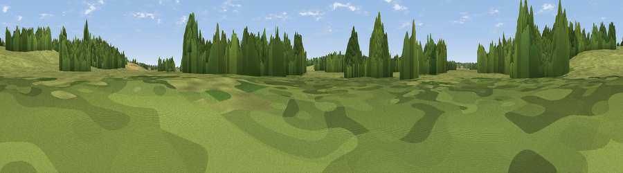

Constable 'The Haywain' viewing point
#45987 in England · top 84% of its area beats it · near DedhamThe view, rendered

A 360° render of this exact spot computed from the terrain model, tree cover and land cover — summer colours, afternoon light, calibrated against photographs of famous viewpoints. Real trees, hedges and buildings will differ in detail.
The panorama
Grey silhouette: terrain skyline in each direction (720 bearings, Earth curvature and refraction included). Dashed green: skyline with trees (+15 m) and buildings (+8 m) as obstacles. Blue strip: how far the ground is visible on each bearing.
Where the view opens
Wedge length = distance to the farthest visible ground on that bearing (vegetation-aware). Rings at 10, 25 and 50 km.
What fills the view
61% grassland · 31% woodland · 7% cropland ·
Angular shares of the visible panorama (visual magnitude), not map area. Landscape diversity 0.39 (0–1 Shannon).
Key numbers
More beautiful places nearby
The staircase of upgrades: each row has a higher view potential than everything closer. Driving times are estimates from straight-line distance, calibrated against real road routing — check an actual route before setting out.
| Place | Direction | Drive | Score |
|---|---|---|---|
| Viewpoint near Stoke by Nayland | WNW · 8 km | ~16 min | 30.1 |
| Viewpoint near Wherstead | NE · 12 km | ~22 min | 32.1 |
| Viewpoint near Copford | SW · 17 km | ~30 min | 34.6 |
| Viewpoint near Great Blakenham | NNE · 17 km | ~30 min | 39.5 |
| Viewpoint near Trimley St Mary | E · 19 km | ~33 min | 41.0 |
| Criers Wood | SW · 30 km | ~47 min | 45.7 |
| Stamfords Hill | SSW · 39 km | ~58 min | 54.1 |
| Viewpoint near Hadleigh | SSW · 54 km | ~76 min | 57.4 |
51.95862, 1.02191 · source: osm viewpoint · position refined by local search. Computed location — check access rights before visiting.